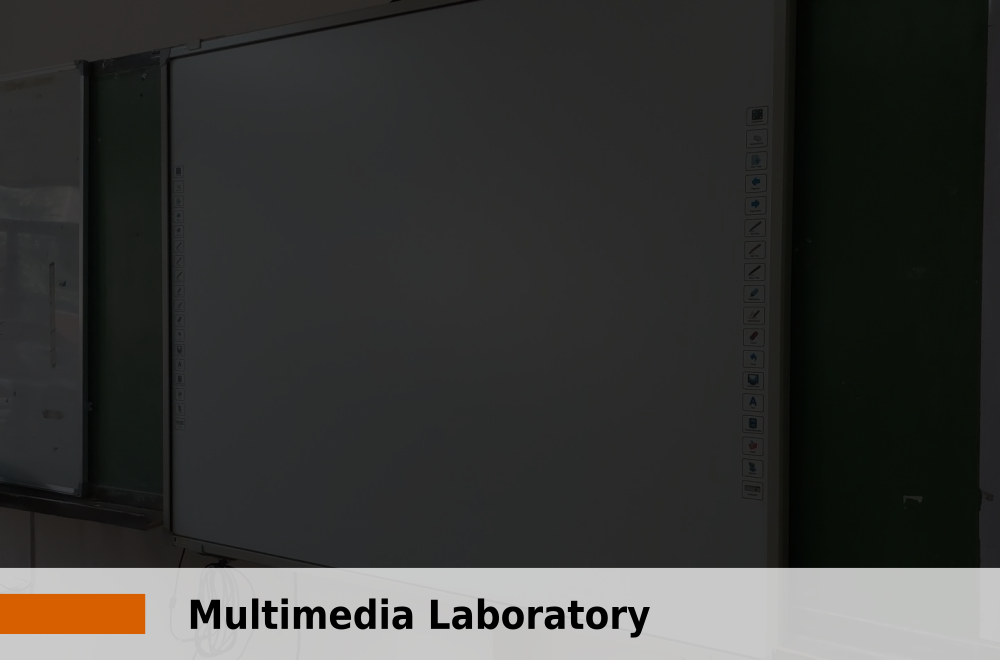
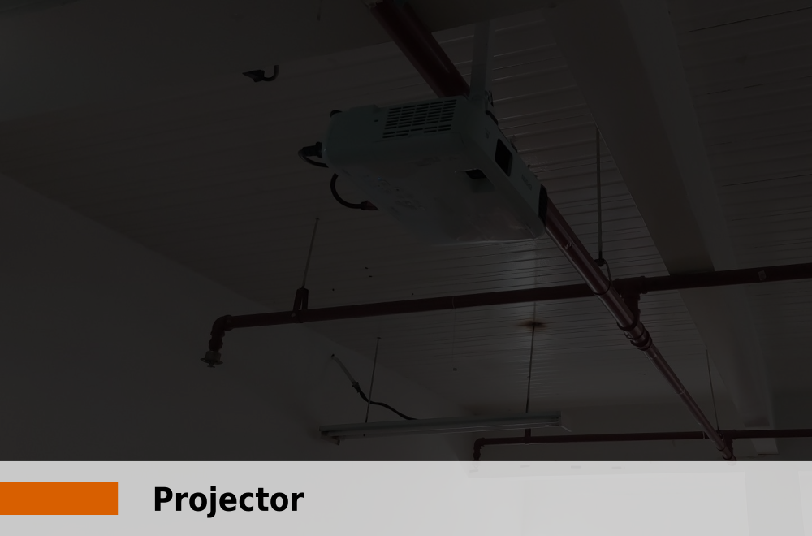
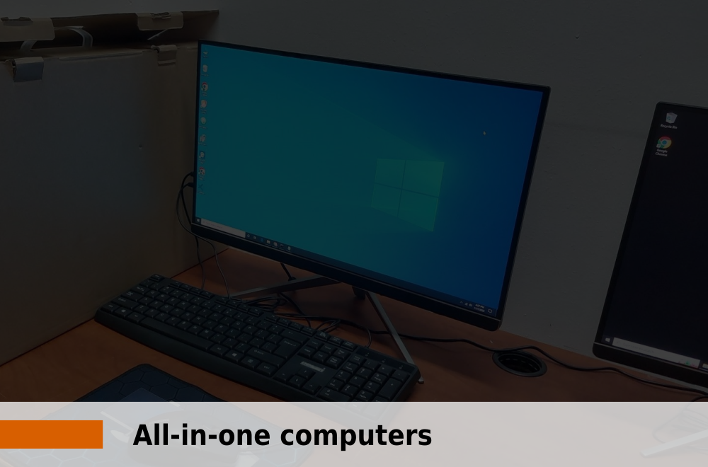
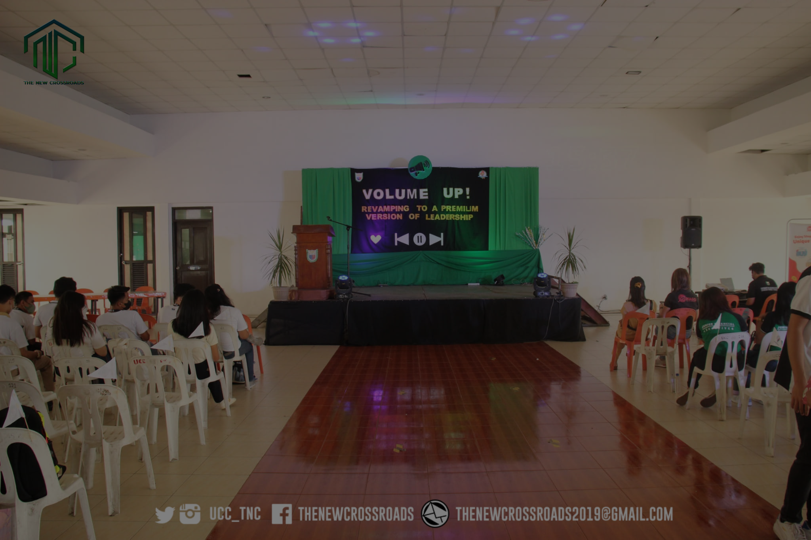
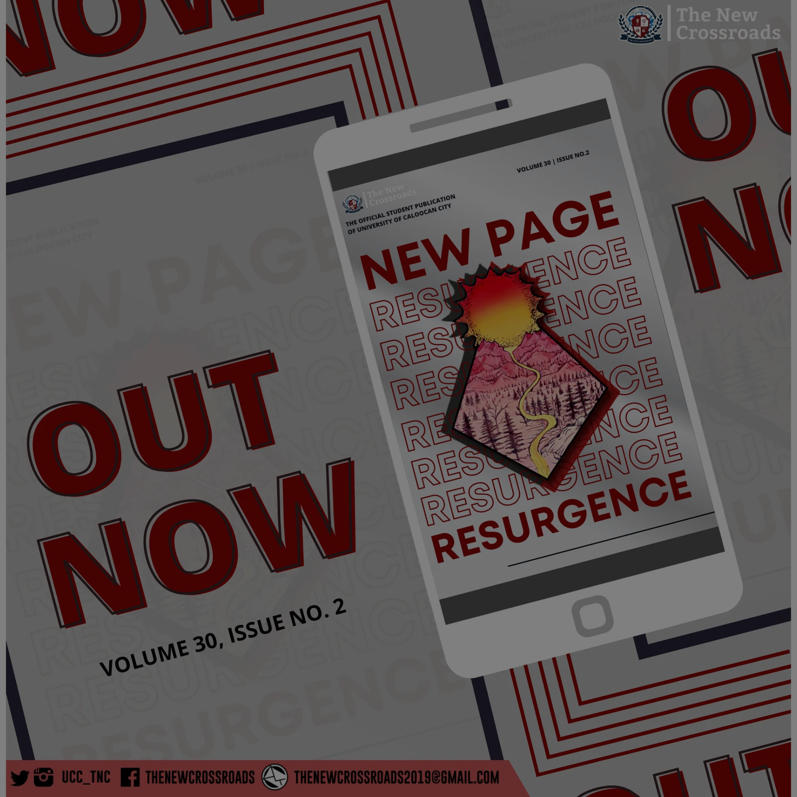
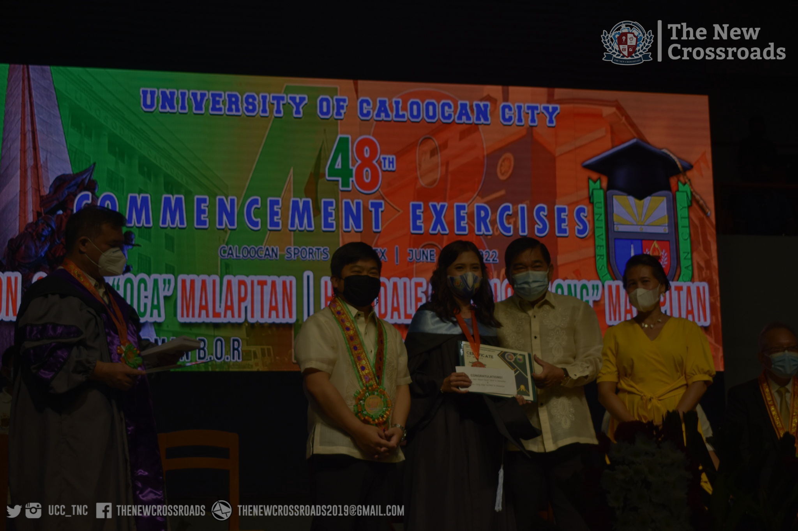
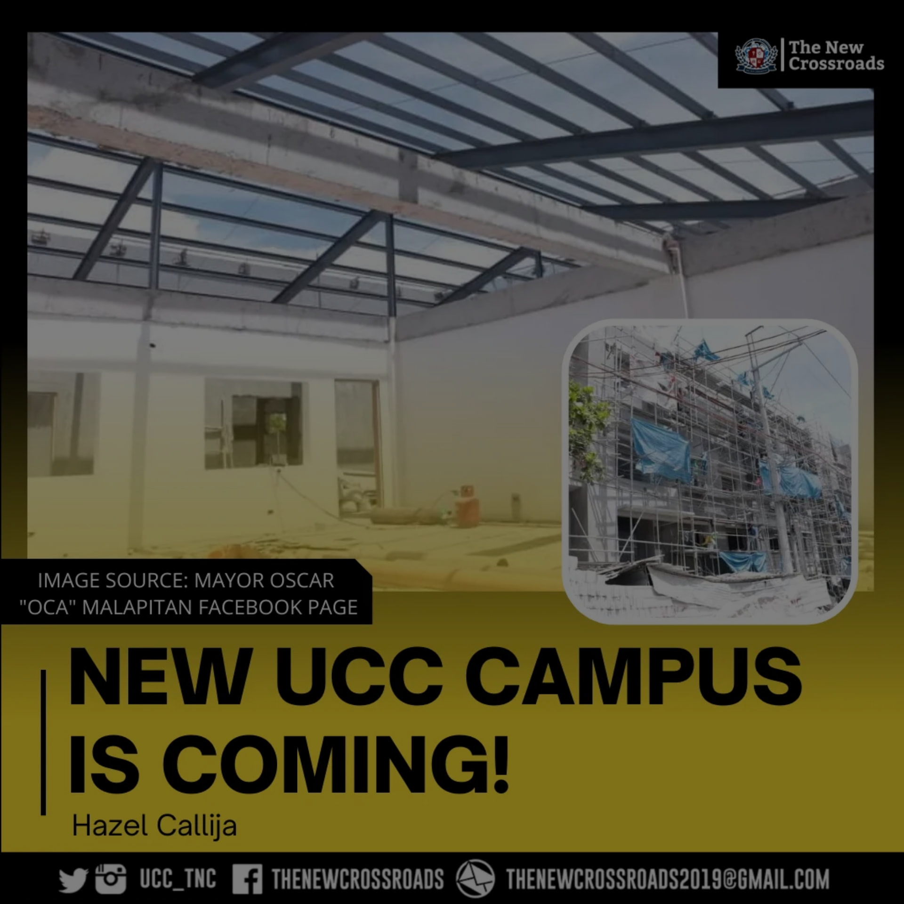

October 22, 2022
September 13, 2022
August 12, 2021
July 1, 2022
June 25, 2022
May 14, 2022


On July 1, 1971, the Secretary of Education authorized the first-year operation of the proposed Caloocan City Community College. For this, Municipal Ordinance No. 1495 appropriated the amount of P23,400.00. Its purpose was to implement the national development goal which assures the maximum participation of all people in the attainment and enjoyment of the benefits of growth and provide quality educational opportunities to its indigent but deserving constituents.
On June 22, 1972, the College was authorized to open the second year of the general education course and the one-year secretarial on a P35,100 city budget.
On June 7, 1973 the secretary of Education approved the third year operation of the College with BS Industrial Education and the BS Business Technology appropriating therefore P36,760 (Mun. Ord. Nos. 2020 and 2140).
On March 25,1975 Ordinance No. 2295 provided for the charter of the renamed Caloocan City Polytechnic College. A fire gutted the High School PTA Building in 1984 forced the College to move to the nearby elementary school before transferring to the Sangandaan site. In June 1996, Buena Park and Camarin Annexes became operational, while Tandang Sora Annex at 7th avenue started classes in November, 2002.From an enrollment of 42 in 1971, the College had 3600 in 2000.
In June 1996, it offered two(2) masteral courses in public administration and in education. To make the College more responsive to the needs of City's constituents, government employees with 60 undergraduate units were enrolled as third year students in the special Bachelor in Public Administration in 1997.
On February 9, 2004, after 33 long years, Municipal Ordinance No. 0379 converted the Caloocan City Polytechnic college into the full-fledged University of Caloocan City.
To maintain and support an adequate system of tertiary education that will help promote the economic growth of the country, strengthen the character and well-being of its graduates as productive members of the community.
A quality higher education institution imbued with relevant knowledge, skills and values for the attainment of community driven, industry sensitive, environmentally conscious, resilient and globally competitive, Academicsally focused citizens for the service of Caloocan City.
To attain quality instruction and high level of teaching competency among the faculty members.
To provide priority programs that are relevant to community development and concern for the environment.
To strengthen linkages between the university and industry partners and professional organization.
To determine the opportunities provided by the university to develop students’ full potential, skills and talents to make them competitive in the labor force in the city, in the national and global community as well.
To develop more immersion programs for students the will produce graduates with increased self-esteem, confidence and resiliency.
To intensify student involvement and Academics leadership within the university and in the local and international sphere.
To embark on research undertaking, curricular enhancement, community development, environmental consciousness, industry sensitivity that significantly affect the academe.